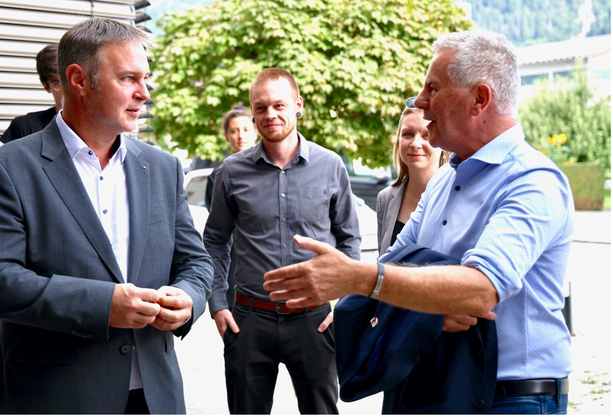
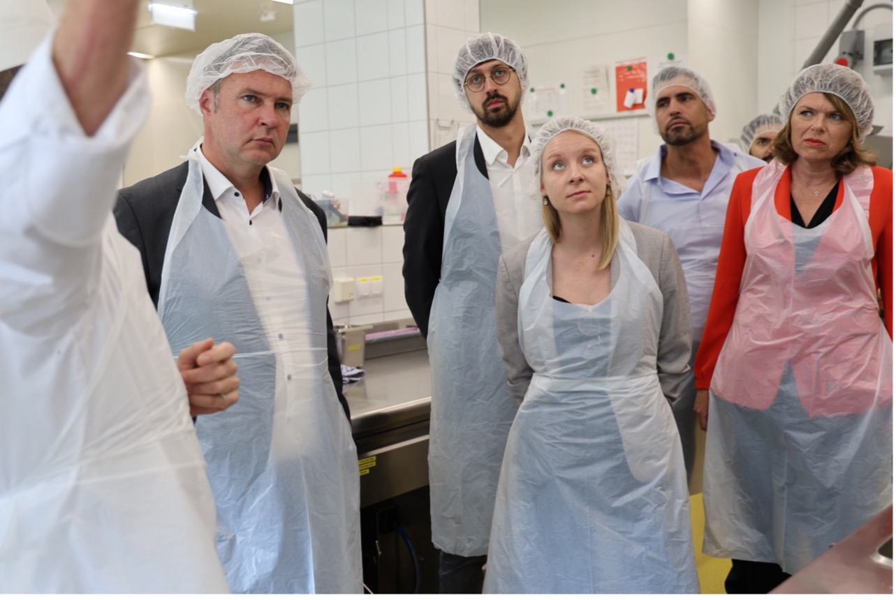
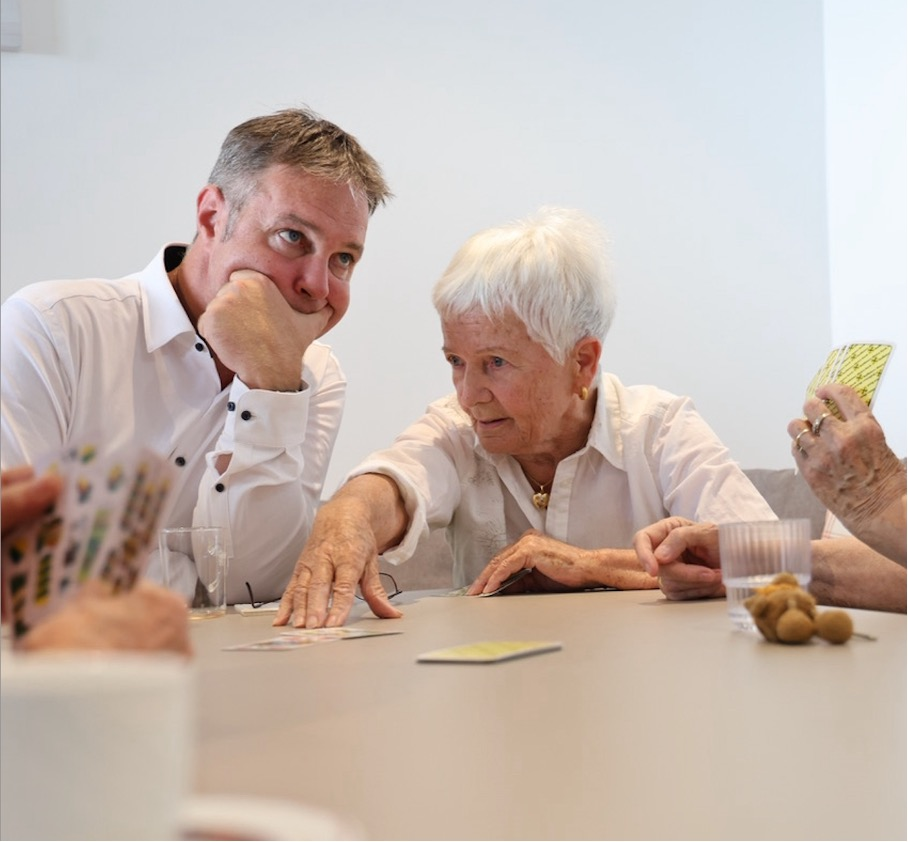

News zu Aktivitäten in Völs und um das SPÖ Team
Spielplatzfest 11.10.2025
(Beitrag vom 08.06.2025)

Völs gegen Gewalt
(Beitrag vom 13.09.2024)
Workshop Selbstverteidigung für Völserinnen
(Beitrag vom 12.09.2024)

Spielplatzfest auf 22.09.2024 verschoben
(Beitrag vom 28.06.2024)
Elmar Neumann neuer Obmann der SPÖ Völs
(Beitrag vom 09.05.2024)

Bei einer außerordentlichen Mitgliederversammlung im März wählte die SPÖ Völs einen neuen Vorsitzenden. Es ist Elmar Neumann, von Beruf Solution Architect bei einem internationalen IT-Betrieb,
geb. 1974. Er ist Obmann-Stellvertreter des Ausschusses für Digitalisierung, Internet und Kabelinfrastruktur und Obmann des Ausschusses für Verkehr und Mobilität.
Eingangs erinnerte die stellvertretende Vorsitzende GV Nicole Mair-Enzi an die unschätzbaren Verdienste des langjährigen Obmannes und Vizebürgermeisters Walter Kathrein: „Du bist
nicht mehr unter uns und Du fehlst uns jeden Tag, aber Du hast auch ein Team geformt, das imstande war, engagiert weiter für die Menschen in Völs da zu sein.“
Der Vorsitzende, die beiden Stellvertreter Bürgermeister Peter Lobenwein und GV Nicole-Enzi und der gesamte Ausschuss wurden einstimmig gewählt. Elmar Neumann betonte in seiner
kurzen Antrittsansprache die Wichtigkeit von Unterschieden, von Diversität in Teams, weil nur dadurch Widerspruch und neue Lösungen entstehen können. Mit unterschiedlichen Meinungen
konstruktiv umgehen sei gerade auch in einem Gemeinderat wichtig.
Auszeichnung für Erwin Niederwieser
(Beitrag vom 09.05.2024)
LH-Stv. Dornauer überreichte an Erwin Niederwieser die Urkunde für 50 Jahre Mitgliedschaft in der SPÖ, die von Beginn bis heute auch mit öffentlichem Engagement verbunden war, vom Völser Vizebürgermeister bis zu 18 Jahren im Nationalrat, davon viele Jahre Bildungs-, Wissenschafts- und Südtirol-Sprecher. Dornauer: „Die Wertschätzung seines Gegenüber und fundierte Argumente haben Erwin immer ausgezeichnet.“
Nachruf Walter Kathrein
Hier gehts zum Artikel:
Völs fördert das Freizeitticket!
(Beitrag vom 13.10.2023)
Wir freuen uns, Euch mitteilen zu können, dass das Freizeitticket Tirol in unserer Gemeinde Völs erneut eine großzügige Förderung von 100 EUR pro Kind (Jahrgänge 2008 - 2017) erhält.
Es ist ein Beweis dafür, dass gemeinsame Anstrengungen und Engagement für das Wohl unserer Gemeinde wirklich Früchte tragen.
Wir haben uns erneut stark dafür eingesetzt, um diese Förderung zu sichern und auch erfolgreich im Gemeinderat zu beschließen.
Freunde schenken Freude präsentieren - Kabarett & Tanz
(Beitrag vom 10.10.2023)
Karten sind ab jetzt erhältlich !
Wo:
Therapie Center Völs: Mo-Do 08:00-12:00
La Tazza
Tanja‘s Nail Lounge
Chrissi Walder 0660/5647272
Achtung: Kartenanzahl ist limitiert
keine Abendkassa vorgesehen
Wichtiger Besuch im Völser Haus der Gesundheitsdienste
(Beitrag vom 02.10.2023)


Das Völser Haus der Gesundheitsdienste war Teil des Besuchsprogramms von Bundesrat und SP Vorsitzendem Andreas Babler. Als langjährigem Traiskirchner Bürgermeister sind ihm die Gemeindeeinrichtungen bestens bekannt und er zeigte sich beeindruckt, wie gut überlegt in Völs der gesamte Komplex der sozialen Einrichtungen organisiert ist. Im Bild begrüßt Bürgermeister Peter Lobenwein die Gäste, unter Ihnen auch die Vorsitzende des SP Landtagsklubs Elisabeth Fleischanderl (Bild links oben). Alle Fotos Matt/SPÖ Tirol
Vorschriftsmäßig beim Besuch der Küche im Seniorenheim: Bundesparteivorsitzender BR Andreas Babler, Landesgeschäftsführer Mag. Lukas Matt, Klubobfrau LAbg. Elisabeth Fleischanderl, Bundesrat Daniel Schmid und LAbg.Sonja Föger-Kalchschmied (Bild rechts oben, von links nach rechts)
Ging's ums Kartenspiel oder um die Politik? Andreas Babler hört zu.
Die Gemeinde Völs forciert den Glasfaserausbau für das Internet
(Beitrag vom 19.09.2023)
Bei Bedarf haben Sie nun die Chance, sich im Rahmen dieser Aktion einen günstigen Anschluss an das Glasfasernetz zu sichern. Aktuell gibt es ein besonderes Angebot, bei dem die Anschlussgebühren zwischen 300.- Euro
und maximal 900.- Euro liegen (bei 10m Grabungsarbeiten), anstatt mehrere Tausend Euro. Diese Aktion endet am 20.10.2023 und bis dahin sollten Sie sich entschieden haben. Bezahlt wird erst nach Fertigstellung im Jahr 2024.
Warum könnte dies für Sie interessant sein, obwohl sie mit ihrer aktuellen Internetanbindung zufrieden sind?
1) Glasfaser steigert den Wert der Immobilie
Das Internet ist Teil unseres Lebens geworden. Egal ob Sie dies für sich, oder Ihre Enkelkinder für Ihre Liegenschaft einplanen, die Anbindung rechnet sich für die nächsten Generationen.
2) Glasfaser ist zukunftssicher
Diese Vernetzungstechnologie hat mit Ihrer heutigen Anbindung nichts zu tun. Dies ist eine komplett neue Möglichkeit, Daten zu übertragen und bietet daher beinahe unbeschränkte Kapazitäten. Da keine Daten über die Luft übertragen werden, haben sie immer eine stabile, ungeteilte und garantierte Bandbreite.
3) Glasfaser bietet Lebensqualität
Verlässliche Infrastruktur für digitale Gesundheitsservices und qualitativ beste Verbindungen steigern die Lebensqualität und Sicherheit. Für Jung und Alt.
4) Glasfaser ist störungsfrei
Im Gegensatz zu herkömmlichen Kupfer-Kabeln beeinflussen sich die einzelnen Glasfasern gegenseitig nicht. Das bringt störungsfreien Internetbetrieb für Sie nach Hause.
5) Glasfaser ist unabhängig und fair
Der aktuelle Ausbau wird „OpenNet“ genannt und steht allen interessierten Anbietern zur Verfügung. So können Sie unabhängig aus der Vielzahl an Produkten wählen.
Im Rahmen dieser Aktion, haben Sie die Wahl zwischen 3 verschiedenen Anbietern, um Ihre individuellen Anforderungen zu wählen.
A1---------A1 Agentur---------------------01 266 01 09
SPUSU---Sabine---------------------------01 270 282 527
3-----------Leider kein Name bekannt---0660/ 6300676
Nur der Vergleich macht sicher!
Glasfaser - der Ausbauplan für Völs!
(Beitrag vom 04.07.2023)
Für Gemeinderat Bernhard Fuchsberger, Obmann des Ausschusses für Digitalisierung, Internet und Kabelinfrastruktur, war das Konzept einer OpenNet Infrastruktur wichtig:
Man kann sich den Internetbetreiber aussuchen.
Für den stellvertretenden Obmann Ing. Elmar Neumann bedeutet eine stabile Übertragungsrate von bis zu 1.000 Mbit/sec auch Zukunftsinvestition und eine Wertsteigerung
jeder Immobilie durch eine zukunftssicheren Technologie für die nächsten Generationen.
Zu den weiteren Bauabschnitten wird es wieder zeitgerecht Infoveranstaltungen geben, zu denen persönlich eingeladen wird. Es ist sicher auch einem Wettbewerb um Marktanteile
zuzuschreiben, dass der Aktionspreis mit rund 300,- Euro sehr günstig ist (gültig für eine Anbindung an das A1 Glasfasernetz bei vorhandener oder durch den Kunden vorbereiteter
Leerverrohrung am Privatgrundstück bei gleichzeitigem Abschluss eines Tarifes beim ausgewählten Internetbetreiber).
Strompreiserhöhung fällt niedriger aus
(Beitrag vom 04.07.2023)
„Aufgrund des derzeit äußerst dynamischen Marktumfelds ziehen wir die Preissenkung auf 24. Juli vor“, so Entstrasser. Zudem gebe es eine Preisgarantie bis
zum 31. März 2024 und damit bis zum Ende der kommenden Heizsaison. Die Energiepreise können damit nur gesenkt, aber nicht erhöht werden. Auch die Innsbrucker
Kommunalbetriebe (IKB) werden ihre Produkte entsprechend anpassen.
Hier gehts zu den Details:
Kommt vobei - wir freuen uns auf einen schönen Nachmittag - mit lustigen Spielen für die Kinder und interessanten Gesprächen mit den Eltern.
(Beitrag vom 16.06.2023)
Landesrat Zumtobel: Regionalbahn und barrierefreier Bahnhof Völs voll im Plan
(Beitrag vom 13.04.2023)
Es war eine beträchtliche ToDo Liste, die der neue SP-Landesrat für Verkehr, Umwelt und Naturschutz aus Völs am 05.04.2023 mitgenommen hat: Von Bauordnungshürden
für Photovoltaikanlagen über fehlende Fahrkartenschalter beim Cyta bis zum Flughafen. „Gebt mir bitte Rückmeldungen!“ war sein Appell am Ende des
spannenden Referats, mit dem er seine und die Ziele der neuen Tiroler Landesregierung darlegte. „Das Klima in der Regierung ist sehr gut, wir
arbeiten konstruktiv und mit Wertschätzung.“ Energieautark bis 2050, da fällt vieles in sein wichtiges Ressort. Teilweise auch der große Umbau
beim Bahnhof Völs, dessen Beginn 2025 für ihn ein fixes Datum ist.
Was nur wenige Zuhörer wussten: Landesrat Zumtobel kennt Völs sehr gut. Einerseits aus seiner ÖBB-Zeit und dann auch als Schiedsrichter bei
Meisterschaftsspielen des Völser SV. „Er war immer korrekt und objektiv!“ - so der Befund des langjährigen VSV-Obmannes und Vizebürgermeisters Walter Kathrein.
Sommerbetreuung 2023 - Das besondere Ferienangebot der Marktgemeinde Völs für alle Völser Kindergarten- und Volksschulkinder
(Beitrag vom 16.02.2023)
Die Marktgemeinde Völs bietet heuer in der Zeit von Montag, 10. Juli bis Freitag, 25. August 2023
eine ganztägige Betreuung mit Mittagstisch für Völser Kindergartenkinder und Volksschulkinder an. Ihre Kinder werden auf Wunsch von 07:00 - 16:30 Uhr
(Ganztagsbetreuung Montag bis Freitag, MIT Mittagstisch) bzw. 07:00 - 13:00 Uhr (Vormittagsbetreuung, OHNE Mittagstisch) betreut. Der Elternbeitrag für die
Vormittagsbetreuung beträgt € 25,00 bzw. € 35,00 für die Ganztagsbetreuung pro Woche. Für Geschwisterkinder gibt es eine soziale Preisstaffelung von -30%.
Für das Mittagessen fällt ein zusätzlicher Betrag von € 4,30 pro Essen an. Die Vorschreibung der Betreuungskosten erfolgt im Vorhinein über die Finanzverwaltung
der Marktgemeinde Völs.
Die Betreuung kann wochenweise in Anspruch genommen werden, als Mindestanmeldedauer gilt eine Woche. Anmeldungen sind wahlweise für die Vormittags- oder die
Ganztagsbetreuung möglich. Für die Anmeldung ist der Nachweis der Berufstätigkeit beider Elternteile notwendig.
Die Kinder werden altersgemäß in Gruppen eingeteilt (Kindergartenkinder und Schulkinder) und altersadäquat betreut.
Die Betreuung der Kindergartenkinder findet in den Räumlichkeiten des Kindergartens West (im KiM Völs-West bei der Mittelschule) statt. Je zwei ausgebildete Fachkräfte
stehen pro Gruppe bereit, wobei die Kinderhöchstzahl bei 20 Kindern pro Gruppe liegt.
Die Betreuung der Schulkinder findet in den Räumlichkeiten der Mittelschule Völs statt und wird von den „Kinderfreunden“ für die Marktgemeinde Völs organisiert.
Ihre verbindliche Anmeldung muss bis spätestens 24. Februar 2023 im Bürgerservice des Gemeindeamtes einlangen! Die angemeldeten Tage sind verpflichtend und können NICHT
STORNIERT werden! Es wird kein Geld rückerstattet!
Anmeldungen ohne Arbeitsnachweise sowie verspätete Anmeldungen werden ausnahmslos NICHT angenommen!
Unter der Telefonnummer 0664/1018292 steht Ihnen Frau Mag. Daniela Seebacher-Fröhlich (Kinderbetreuungskoordinatorin) für allfällige Rückfragen zur Verfügung
(Mo, Di und Fr von 08:00 bis 11:00 Uhr).
Formular und Elterninformationen zum Download:
Unser neues Völser Dorftaxi
(Beitrag vom 22.12.2022)
Wir freuen uns bekannt zu geben, dass ab dem 17.12.2022 allen Völser Bürgern und CYTA Kunden das Völser Dorftaxi, auf dem Standplatz direkt vor dem CYTA Haupteingang, zur Verfügung steht.
Betrieben wird das Dorftaxi nach dem System eines Sammeltaxis. Es ist daher auch vorgesehen mit mehreren Fahrgästen gleichzeitig zu fahren, oder verschiedene Fahrgäste in Völs aufzunehmen. Dies soll beispielsweise den gemeinsamen Einkauf einer Gruppe von Völser*innen möglich machen. Neben dem Zusteigen per Handzeichen sind direkte Abholungen innerhalb des Ortsgebietes auf Bestellung natürlich auch möglich.
Innerhalb des Gemeindegebietes, dazu zählt auch das Ortsgebiet von Afling, sind Fahrgäste mit einem Fixpreis von 8,00 Euro pro Person, unabhängig der Streckenlänge und Anzahl der mitfahrenden Fahrgäste, unterwegs. Es handelt sich daher um eine Ortspauschale, ohne die sonst bekannten Anfahrtskosten, die Taxis beispielsweise aus Innsbruck verrechnen.
Auch für Fahrten außerhalb des Ortsgebietes steht das Dorftaxi zur Verfügung. Der Fahrpreis dafür ist mit einer fair kalkulierten Preiseliste festgelegt und ist somit vor Fahrtantritt mit dem Fahrer zu vereinbaren. Unterwegs sind ausschließlich komfortable Mercedes Fahrzeuge mit Allradantrieb, schwerpunktmäßig ein Mercedes Vito Bus. Damit bewältigt man mit diesem Fahrzeug auch problemlos größere und sperrige Einkäufe, Kinderwägen, Gehilfen oder Rollstühle.
Die stehts bestens geschulten Fahrer verfügen über langjährige Berufserfahrungen und sind bemüht, allen Fahrgästen hilfsbereit zur Seite zu stehen.
Diesen hervorragenden Service hat die Unterstützung seitens der Marktgemeinde Völs und jene des CYTA Einkaufszentrums möglich gemacht.
Das Dorftaxi steht jeweils von Montag bis Samstag im Zeitraum von 08:00 bis 19:00 Uhr zur Verfügung und kann unter der Nummer 0676/62 007 63 geordert werden.
Christkindl-Markt
(Beitrag vom 25.11.2022)
3. und 4. Dezember Christkindlmarkt in Völs mit neuem Standort - Vorplatz VOLKSSCHULE. Samstag unterhalten euch ab 15:00 Uhr das Trio Taktvoll und ab 18:00 Uhr gibt es einen musikalischen Abend der Extraklasse mit der Gruppe HITINN. Am Sonntag bringt euch der Romantik Express in weihnachtliche Stimmung. Auch der Nikolaus hat sich an beiden Tagen angemeldet.
Beitritt der Marktgemeinde zum Klimabündnis
(Beitrag vom 20.06.2022)

Der Beitritt der Marktgemeinde Völs zum Klimabündnis Tirol erfolgte bereits 2020, er wurde jetzt durch die Übergabe des Ortschildes und der Urkunde auch in aller Form vollzogen.
Das Klimabündnis ist ein Netzwerk von Gemeinden für den Klimaschutz, das in Österreich und weiteren 26 Ländern in Europa tätig ist. In Tirol gehören dem Bündnis derzeit von Absam bis Zöblen 80 Gemeinden an. Das „Bündnis“ ist eine Partnerschaft zwischen rund 1700 europäischen Gemeinden und Städten und Organisationen der indigenen Bevölkerung in Brasilien und Kolumbien. Neben Gemeinden gehören auch Betriebe und Bildungseinrichtungen dem Bündnis an.
Dabei werden Projekte für die indigene Bevölkerung des Amazonas Regenwaldes unterstützt. Ebenso wichtig sind auch örtliche Projekte für den Klimaschutz in den Mitgliedsgemeinden, bei denen die Fachleute des Klimabündnis Tirol die Gemeinden berät.
Ein Schild mit Zukunftscharakter. Im Bild v.l.n.r.
der Geschäftsführer des Klimabündnis Tirol Andrä Stigger, Vizebürgermeister Peter Ties, Ers.GR Barbara Erler-Klima, der Obmann des Ausschusses für Umwelt, Natur, Klima und Energie Markus Einkemmer, Maria Legner, im Klimabündnis für die Gemeinden zuständig, Gemeinderätin Nicole Mair-Enzi, Bürgermeister Peter Lobenwein, Christoph Klocker vom Klimabündnis und Gemeinderat Ing. Elmar Neumann.
Wir laden alle ganz herzlich zu unserem Spielplatzfest ein:
(Beitrag vom 12.06.2022)
Sommerbetreuung 2022 - Das besondere Ferienangebot der Marktgemeinde Völs für alle Völser Kindergarten- und Volksschulkinder
(Beitrag vom 03.04.2022)
Die Marktgemeinde Völs bietet heuer in der Zeit von Montag, 11. Juli bis Freitag, 26. August 2022
eine ganztägige Betreuung mit Mittagstisch für Völser Kindergartenkinder und Volksschulkinder an. Ihre Kinder werden auf Wunsch von 07:00 - 16:30 Uhr (Ganztagsbetreuung Montag bis Freitag, MIT Mittagstisch) bzw. 07:00 - 13:00 Uhr (Vormittagsbetreuung, OHNE Mittagstisch) betreut.
Der Elternbeitrag für die Vormittagsbetreuung beträgt € 25,00 bzw. € 35,00 für die Ganztagsbetreuung pro Woche. Für Geschwisterkinder gibt es eine soziale Preisstaffelung von -30%. Für das Mittagessen fällt ein zusätzlicher Betrag von € 4,30 pro Essen an. Die Vorschreibung der Betreuungskosten erfolgt im Vorhinein über die Finanzverwaltung der Marktgemeinde Völs.
Die Betreuung kann wochenweise in Anspruch genommen werden, als Mindestanmeldedauer gilt eine Woche. Anmeldungen sind wahlweise für die Vormittags- oder die Ganztagsbetreuung möglich. Für die Anmeldung ist der Nachweis der Berufstätigkeit beider Elternteile notwendig.
Die Kinder werden altersgemäß in Gruppen eingeteilt (Kindergartenkinder und Schulkinder) und altersadäquat betreut.
Die Betreuung der Kindergartenkinder findet in den Räumlichkeiten des Kindergartens West (im KiM Völs-West bei der Mittelschule) statt. Je zwei ausgebildete Fachkräfte stehen pro Gruppe bereit, wobei die Kinderhöchstzahl bei 20 Kindern pro Gruppe liegt.
Die Betreuung der Schulkinder findet in den Räumlichkeiten der Mittelschule Völs statt und wird von den „Kinderfreunden“ für die Marktgemeinde Völs organisiert.
Ihre verbindliche Anmeldung muss bis spätestens 22. April 2022 im Bürgerservice des Gemeindeamtes einlangen! Die angemeldeten Tage sind verpflichtend und können NICHT STORNIERT werden! Es wird kein Geld rückerstattet!
Anmeldungen ohne Arbeitsnachweise sowie verspätete Anmeldungen werden ausnahmslos NICHT angenommen!
Unter der Telefonnummer 0664/1018292 steht Ihnen Frau Mag. Daniela Seebacher-Fröhlich (Kinderbetreuungskoordinatorin) für allfällige Rückfragen zur Verfügung (Mo, Di und Fr von 08:00 bis 11:00 Uhr).
Gute Laune: SP-Bgm. Peter Lobenwein, flankiert von Silvia Pöhli (ÖVP, 1. Vizebgm.) und Peter Ties (Wir für Völs, 2. Vizebgm.)
(Beitrag vom 18.03.2022)
Der neue Völser Bürgermeister Peter Lobenwein wurde am Montag angelobt – und am Donnerstag fand eine bemerkenswerte konstituierende GR-Sitzung statt.
Im Veranstaltungszentrum Blaike bot sich ein Bild, das auch für langjährige Polit-Beobachter gewöhnungsbedürftig war. Mit Peter Lobenwein übernahm der neue SPÖ-Bürgermeister in der Marktgemeinde den Vorsitz, die jahrzehntelang von der ÖVP mit absoluter Mehrheit regiert wurde. Ex-Bürgermeister Erich Ruetz saß ebenso wie die langjährigen ehemaligen Vizebürgermeister Anton Pertl (ÖVP) und Walter Kathrein (SPÖ) im Publikum.
Hier gehts zum kompletten Artikel:
Gemeinderatswahlen
(Beitrag vom 01.03.2022)

DANKE 🤩🎉🎊
Unsere neugewählten Gemeinderäte: Peter, Nicole, Daniela und Dominik freuen sich schon, Euch durch gute Arbeit für das Vertrauen zu danken! 👍✅
Und am 13. März
Deine Wahl: Der Bürgermeister mit Herz und Verstand
Peter Lobenwein ❌
Völs in guten Händen
Valentine’s Day
(Beitrag vom 14.23.2022)

Passend zum Tag der Liebe wurden heute, gemeinsam mit unserem Spitzenkandidat Peter Lobenwein und Mitglieder aus der Liste, zahlreiche Tulpen verteilt. Zusammen mit Daniela (Platz 3), Dominik (Platz 4) & Elmar (Platz 5) wurden einige Lächeln ins Gesicht gezaubert. 💘 Wir wünschen euch einen schönen Valentinstag! 💝